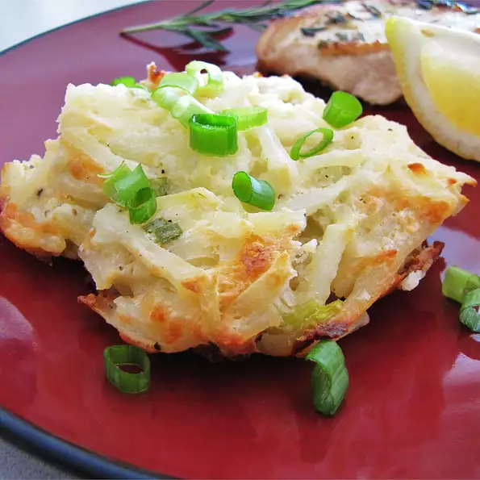

Asiago Hash Browns

What could be a worthy breakfast?
This savory blend of frozen hash browns, sour cream, and Asiago cheese makes a great potato side dish.
The creamy blend of hash brown potatoes and Asiago cheese makes a great side dish, or may even be served for breakfast.
Ingredients
- 1 (30 ounce) package frozen hash brown potatoes, thawed
- 1 ½ cups grated Asiago cheese
- 1 medium onion, chopped
- 1 (8 ounce) container sour cream
- 8 fluid ounces heavy cream
- ½ cup butter, melted
- paprika to taste
- salt and pepper to taste
Steps
- Preheat oven to 350 degrees F (175 degrees C).
- In a medium casserole dish, mix the hash browns, Asiago cheese, onion, sour cream, heavy cream, and butter.
- Bake 1 hour in the preheated oven, or until hash browns are fully cooked and the top is lightly browned. Season with paprika, salt, and pepper.